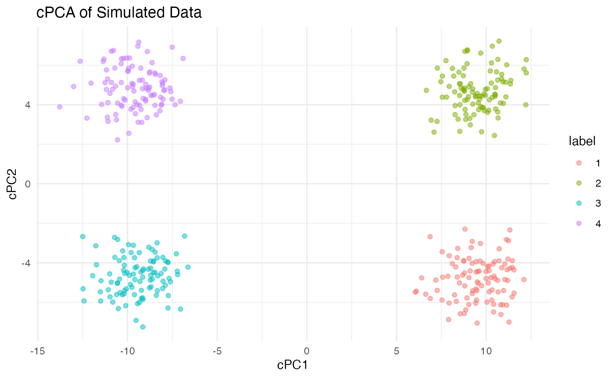
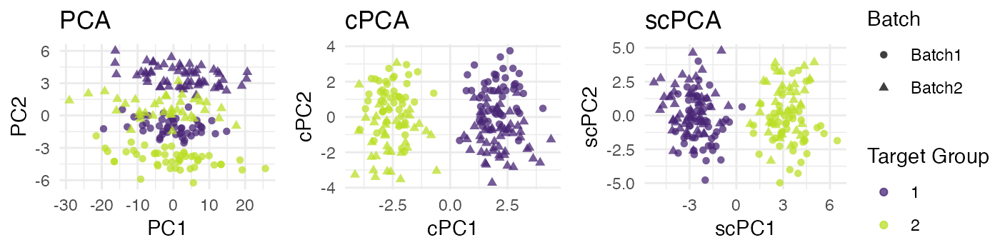

scPCA: Sparse contrastive principal component analysis
Philippe Boileau and Nima Hejazi
2019-10-31
Source:vignettes/scpca_intro.Rmd
scpca_intro.RmdIntroduction
##
## Attaching package: 'dplyr'## The following objects are masked from 'package:stats':
##
## filter, lag## The following objects are masked from 'package:base':
##
## intersect, setdiff, setequal, union## Loading required package: magrittr## Loading required package: lars## Loaded lars 1.2## scPCA v1.1.0: Sparse Contrastive Principal Component AnalysisData pre-processing and exploratory data analysis and are two important steps in the data science life-cycle. As data sets become larger and the signal weaker, their importance increases. Thus, methods that are capable of extracting the signal from such data sets is badly needed. Often, these steps rely on dimensionality reduction techniques to isolate pertinent information in data. However, many of the most commonly-used methods fail to reduce the dimensions of these large and noisy data sets successfully.
Principal component analysis (PCA) is one such method. Although popular for its interpretable results and ease of implementation, PCA’s performance on high-dimensional often leaves much to be desired. Its results on these large datasets have been found to be unstable, and it is often unable to identify variation that is contextually meaningful.
Fortunately, modifications of PCA have been developed to remedy these issues. Namely, sparse PCA (sPCA) was created to increase the stability of the principal component loadings and variable scores in high dimensions, and constrastive PCA (cPCA) was proposed as a method for capturing relevant information in the high-dimensional data (Abid et al. 2018).
Although sPCA and cPCA have proven useful in resolving individual shortcomings of PCA, neither is capable of tackling the issues of stability and relevance simultaneously. The goal of this research project is to determine whether a combination of these methods, dubbed sparse constrastive PCA (scPCA), can accomplish this task.
Installation
To install the latest stable release of the scPCA package from Bioconductor, use BiocManager:
Note that development of the scPCA package is done via its GitHub repository. If you wish to contribute to the development of the package or use features that have not yet been introduced into a stable release, scPCA may be installed from GitHub using remotes:
Comparing PCA, SPCA, cPCA and scPCA
A brief comparion of PCA, SPCA, cPCA and scPCA is provided below. All four methods are applied to a simulated target dataset consisting of 400 observations and 30 continuous variables. Additionally, each observation is classified as belonging to one of four classes. This label is known is known a priori. A background data set comprised of the same number of variables as the target data set.
The target data was simulated as follows:
- Each of the first 10 variables was drawn from \(N(0, 10)\)
- For group 1 and 2, variables 11 through 20 were drawn from \(N(0, 1)\)
- For group 3 and 4, variables 11 through 20 were drawn from \(N(3, 1)\)
- For group 1 and 3, variables 21 though 30 were drawn from \(N(-3, 1)\)
- For group 2 and 4, variables 21 though 30 were drawn from \(N(0, 1)\)
The background data was simulated as follows:
- The first 10 variables were drawn from \(N(0, 10)\)
- Variables 11 through 20 were drawn from \(N(0, 3)\)
- Variables 21 through 30 were drawn from \(N(0, 1)\)
A similar simulation scheme is provided in Abid et al. (2018).
PCA
First, PCA is applied to the target data. As we can see from the figure, PCA is incapable of creating a lower dimensional representation of the target data that captures the variation of interest (i.e. the four groups). In fact, no pair of principal components among the first twelve were able to.
# set seed for reproducibility
set.seed(1742)
# load data
data(toy_df)
# perform PCA
pca_sim <- prcomp(toy_df[, 1:30])
# plot the 2D rep using first 2 components
df <- as_tibble(list("PC1" = pca_sim$x[, 1],
"PC2" = pca_sim$x[, 2],
"label" = as.character(toy_df[, 31])))
p_pca <- ggplot(df, aes(x = PC1, y = PC2, colour = label)) +
ggtitle("PCA on Simulated Data") +
geom_point(alpha = 0.5) +
theme_minimal()
p_pcaSparse PCA
Much like PCA, the leading components of SPCA – for varying amounts of sparsity – are incapable of splitting the observations into four distinct groups.
# perform sPCA on toy_df for a range of L1 penalty terms
penalties <- exp(seq(log(10), log(1000), length.out = 6))
df_ls <- lapply(penalties, function(penalty) {
spca_sim_p <- spca(toy_df[, 1:30], K = 2, para = rep(penalty, 2),
type = "predictor", sparse = "penalty")$loadings
spca_sim_p <- as.matrix(toy_df[, 1:30]) %*% spca_sim_p
spca_out <- list("SPC1" = spca_sim_p[, 1],
"SPC2" = spca_sim_p[, 2],
"penalty" = round(rep(penalty, nrow(toy_df))),
"label" = as.character(toy_df[, 31])) %>%
as_tibble()
return(spca_out)
})
df <- bind_rows(df_ls)
# plot the results of sPCA
p_spca <- ggplot(df, aes(x = SPC1, y = SPC2, colour = label)) +
geom_point(alpha = 0.5) +
ggtitle("SPCA on Simulated Data for Varying L1 Penalty Terms") +
facet_wrap(~ penalty, nrow = 2) +
theme_minimal()
p_spca
Contrastive PCA (cPCA)
The first two contrastive principal components of cPCA successfully captured the variation of interest in the data with the help of the background data set. To fit contrastive PCA with the scPCA function of this package, simply select no penalization (by setting argument penalties = 0):
# run cPCA across with a penalty of zero to recover Abid et al.'s cPCA
cpca_sim <- scPCA(target = toy_df[, 1:30],
background = background_df,
penalties = 0,
n_centers = 4)
# create a dataframe to be plotted
cpca_df <- cpca_sim$x %>%
as_tibble() %>%
mutate(label = toy_df[, 31] %>% as.character)
colnames(cpca_df) <- c("cPC1", "cPC2", "label")
# plot the results
p_cpca <- ggplot(cpca_df, aes(x = cPC1, y = cPC2, colour = label)) +
geom_point(alpha = 0.5) +
ggtitle("cPCA of Simulated Data") +
theme_minimal()
p_cpca
scPCA: Sparse Contrastive PCA
The leading sparse contrastive components were also able to capture the variation of interest, though the clusters corresponding to the class labels are more loose than those of cPCA. Importantly, the first and second scPC contain only two and three non-zero loadings, respectively – a significant improvement over cPCA, whose first and second cPCs each possess 30 non-zero loadings, in terms of interpretability.
# run scPCA for using 40 logarithmically seperated contrastive parameter values
# and possible 20 L1 penalty terms
scpca_sim <- scPCA(target = toy_df[, 1:30],
background = background_df,
n_centers = 4)
# create a dataframe to be plotted
scpca_df <- scpca_sim$x %>%
as_tibble() %>%
mutate(label = toy_df[, 31] %>% as.character)
colnames(scpca_df) <- c("scPC1", "scPC2", "label")
# plot the results
p_scpca <- ggplot(scpca_df, aes(x = scPC1, y = scPC2, colour = label)) +
geom_point(alpha = 0.5) +
theme_minimal()
p_scpca# create the loadings comparison plot
load_diff_df <- bind_rows(
cpca_sim$rotation %>% as.data.frame,
scpca_sim$rotation %>% as.data.frame) %>%
mutate(
sparse = c(rep("0", 30), rep("1", 30)),
coef = rep(1:30, 2)
)
colnames(load_diff_df) <- c("comp1", "comp2", "sparse", "coef")
p1 <- load_diff_df %>%
ggplot(aes(y = comp1, x = coef, fill = sparse)) +
geom_bar(stat = "identity") +
xlab("") +
ylab("") +
ylim(-1, 1) +
ggtitle("First Component") +
scale_fill_discrete(name = "Method", labels = c("cPCA", "scPCA")) +
theme_minimal()
p2 <- load_diff_df %>%
ggplot(aes(y = comp2, x = coef, fill = sparse)) +
geom_bar(stat = "identity") +
xlab("") +
ylab("") +
ylim(-1, 1) +
ggtitle("Second Component") +
scale_fill_discrete(name = "Method", labels = c("cPCA", "scPCA")) +
theme_minimal()
# build full plot via ggpubr
annotate_figure(
ggarrange(p1, p2, nrow = 1, ncol = 2,
common.legend = TRUE, legend = "right"),
top = "Leading Loadings Vectors Comparison",
left = "Loading Weights",
bottom = "Variable Index"
)## Warning: Removed 1 rows containing missing values (geom_bar).
## Warning: Removed 1 rows containing missing values (geom_bar).
## Warning: Removed 1 rows containing missing values (geom_bar).
Bioconductor Integration via SingleCellExperiment
We now turn to discussing how the tools in the scPCA package can be used more readily with data structures common in computational biology by examining their integration with the SingleCellExperiment container class. For our example, we will use splatter to simulate a scRNA-seq data set using the Splatter framework (Zappia, Phipson, and Oshlack 2017). This method simulates a scRNA-seq count matrix by way of a gamma-Poisson hierarchical model, where the mean expression level of gene \(g_i,\; i = 1, \ldots, p\) is sampled from a gamma distribution, and the count \(x_{i, j}, \; j = 1, \ldots, n\) of cell \(c_j\) is sampled from a Poisson distribution with mean equal to the mean expression level of \(g_i\).
To start, let’s load the required packages and create a simple dataset of 300 cells and 500 genes. The cells are evenly split among three biological groups. The samples in two of these groups possess genes that are highly differentially expressed when compared to those in other groups; they comprise the target data. The genes of the third group of cells are less differentially expressed to the genes in the target data, and so it is considered the background data set. A large batch effect is simulated to confound the biological signal.
library(splatter)
library(SingleCellExperiment)
# Simulate the three groups of cells. Mask cell heterogeneity with batch effect
params <- newSplatParams(
seed = 6757293,
nGenes = 500,
batchCells = c(150, 150),
batch.facLoc = c(0.05, 0.05),
batch.facScale = c(0.05, 0.05),
group.prob = rep(1/3, 3),
de.prob = c(0.1, 0.05, 0.1),
de.downProb = c(0.1, 0.05, 0.1),
de.facLoc = rep(0.2, 3),
de.facScale = rep(0.2, 3)
)
sim_sce <- splatSimulate(params, method = "groups")To proceed, we log-transform the raw counts and retain only the 250 most variable genes. We then split the simulated data into target and background data sets. Our goal here is to demonstrate a typical assessment of scRNA-seq data (and data from similar assays) using the tools made available in the scPCA package. A standard analysis would follow a workflow largely similar to the one below, though without such a computationally convenient data set.
# rank genes by variance
n_genes <- 250
vars <- assay(sim_sce) %>%
log1p %>%
rowVars
names(vars) <- rownames(sim_sce)
vars <- sort(vars, decreasing = TRUE)
# subset SCE to n_genes with highest variance
sce_sub <- sim_sce[names(vars[seq_len(n_genes)]),]
sce_sub## class: SingleCellExperiment
## dim: 250 300
## metadata(1): Params
## assays(6): BatchCellMeans BaseCellMeans ... TrueCounts counts
## rownames(250): Gene336 Gene362 ... Gene409 Gene444
## rowData names(9): Gene BaseGeneMean ... DEFacGroup2 DEFacGroup3
## colnames(300): Cell1 Cell2 ... Cell299 Cell300
## colData names(4): Cell Batch Group ExpLibSize
## reducedDimNames(0):
## spikeNames(0):# split the subsetted SCE into target and background SCEs
tg_sce <- sce_sub[, sce_sub$Group %in% c("Group1", "Group3")]
bg_sce <- sce_sub[, sce_sub$Group %in% c("Group2")]Note that we limit our analysis to just 250 genes in the interest of time, a typical analysis would generally include a much larger proportion (if not all) of the genes assayed.
Owing to the flexibility of the SingleCellExperiment class, we are able to generate PCA, cPCA, and scPCA representations of the target data, storing these in SingleCellExperiment object using the reducedDims method.
Below, we perform standard PCA on the log-transformed target data, which has been centered and scaled, and perform both cPCA and cPCA using the scPCA function, storing each in a separate object. After applying each of these dimension reduction techniques, we store the resultant objects in a SimpleList that is then appended to the SingleCellExperiment object using the reducedDims accessor. The results are presented in the following figure. cPCA and scPCA successfully remove the batch effect, though PCA is incapable of doing so in two dimensions.
# for both cPCA and scPCA, we'll set the penalties and contrasts arguments
contrasts <- exp(seq(log(0.1), log(100), length.out = 5))
penalties <- seq(0.2, 1, length.out = 3)
# first, PCA
pca_out <- prcomp(t(log1p(counts(tg_sce))), center = TRUE, scale. = TRUE)
# next, cPCA
cpca_out <- scPCA(t(log1p(counts(tg_sce))),
t(log1p(counts(bg_sce))),
n_centers = 2,
n_eigen = 2,
contrasts = contrasts,
penalties = 0,
center = TRUE,
scale = TRUE)
# finally, scPCA
scpca_out <- scPCA(t(log1p(counts(tg_sce))),
t(log1p(counts(bg_sce))),
n_centers = 2,
n_eigen = 2,
contrasts = contrasts,
penalties = penalties,
center = TRUE,
scale = TRUE)
# store new representations in the SingleCellExperiment object
reducedDims(tg_sce) <- SimpleList(PCA = pca_out$x[, 1:2],
cPCA = cpca_out$x,
scPCA = scpca_out$x)
tg_sce## class: SingleCellExperiment
## dim: 250 194
## metadata(1): Params
## assays(6): BatchCellMeans BaseCellMeans ... TrueCounts counts
## rownames(250): Gene336 Gene362 ... Gene409 Gene444
## rowData names(9): Gene BaseGeneMean ... DEFacGroup2 DEFacGroup3
## colnames(194): Cell3 Cell5 ... Cell299 Cell300
## colData names(4): Cell Batch Group ExpLibSize
## reducedDimNames(3): PCA cPCA scPCA
## spikeNames(0):
In the above, we set n_eigen = 2 in the calls to the scPCA function that generate the cPCA and scPCA output, recovering the rotated gene-level data for just the first two components of the dimension reduction. While this is done to be explicit (as n_eigen = 2 by default), we wish to emphasize that it will often be appropriate to set this to a higher value in order to recover further dimensions generated by these techniques, as such additional information may be useful in exploring further signal in the data at hand. For congruence with cPCA and scPCA, we retain only the first two dimensions generated by PCA in the information stored in the SingleCellExperiment object.
Parallelization
Finally, note that the scPCA function has an argument parallel (set to FALSE by default), which facilitates parallelized computation of the various subroutines required in constructing the output of the scPCA function. In a standard analysis of genomic data, use of this parallelization will be crucial, thus, each of the core subroutines of scPCA has an equivalent parallelized variant that makes use of the infrastructure provided by the BiocParallel package. In order to make effective use of this paralleization, one need only set parallel = TRUE in a call to scPCA after having registered a particular parallelization back-end for parallel evaluation as described in the BiocParallel documentation. An example of this form of parallelization follows:
# perform the same operations in parallel using BiocParallel
library(BiocParallel)
param <- MulticoreParam()
register(param)
# perfom cPCA
cpca_bp <- scPCA(
target = toy_df[, 1:30],
background = background_df,
contrasts = exp(seq(log(0.1), log(100), length.out = 10)),
penalties = 0,
n_centers = 4,
parallel = TRUE
)
# perform scPCA
scpca_bp <- scPCA(
target = toy_df[, 1:30],
background = background_df,
contrasts = exp(seq(log(0.1), log(100), length.out = 10)),
penalties = seq(0.1, 1, length.out = 9),
n_centers = 4,
parallel = TRUE
)Session Information
## R version 3.6.1 (2019-07-05)
## Platform: x86_64-pc-linux-gnu (64-bit)
## Running under: Ubuntu 18.04.3 LTS
##
## Matrix products: default
## BLAS: /usr/lib/x86_64-linux-gnu/openblas/libblas.so.3
## LAPACK: /usr/lib/x86_64-linux-gnu/libopenblasp-r0.2.20.so
##
## locale:
## [1] LC_CTYPE=en_US.UTF-8 LC_NUMERIC=C
## [3] LC_TIME=en_US.UTF-8 LC_COLLATE=en_US.UTF-8
## [5] LC_MONETARY=en_US.UTF-8 LC_MESSAGES=en_US.UTF-8
## [7] LC_PAPER=en_US.UTF-8 LC_NAME=C
## [9] LC_ADDRESS=C LC_TELEPHONE=C
## [11] LC_MEASUREMENT=en_US.UTF-8 LC_IDENTIFICATION=C
##
## attached base packages:
## [1] parallel stats4 stats graphics grDevices utils datasets
## [8] methods base
##
## other attached packages:
## [1] splatter_1.8.0 SingleCellExperiment_1.6.0
## [3] SummarizedExperiment_1.14.1 DelayedArray_0.10.0
## [5] BiocParallel_1.18.1 matrixStats_0.55.0
## [7] Biobase_2.44.0 GenomicRanges_1.36.1
## [9] GenomeInfoDb_1.20.0 IRanges_2.18.3
## [11] S4Vectors_0.22.1 BiocGenerics_0.30.0
## [13] scPCA_1.1.0 elasticnet_1.1.1
## [15] lars_1.2 ggpubr_0.2.3
## [17] magrittr_1.5 ggplot2_3.2.1
## [19] dplyr_0.8.3 BiocStyle_2.12.0
##
## loaded via a namespace (and not attached):
## [1] viridisLite_0.3.0 Rdpack_0.11-0 assertthat_0.2.1
## [4] BiocManager_1.30.9 GenomeInfoDbData_1.2.1 yaml_2.2.0
## [7] globals_0.12.4 pillar_1.4.2 backports_1.1.5
## [10] lattice_0.20-38 glue_1.3.1 digest_0.6.22
## [13] checkmate_1.9.4 ggsignif_0.6.0 XVector_0.24.0
## [16] colorspace_1.4-1 cowplot_1.0.0 htmltools_0.4.0
## [19] Matrix_1.2-17 pkgconfig_2.0.3 bibtex_0.4.2
## [22] listenv_0.7.0 bookdown_0.14 zlibbioc_1.30.0
## [25] purrr_0.3.3 scales_1.0.0 tibble_2.1.3
## [28] withr_2.1.2 lazyeval_0.2.2 crayon_1.3.4
## [31] memoise_1.1.0 evaluate_0.14 fs_1.3.1
## [34] future_1.14.0 MASS_7.3-51.4 tools_3.6.1
## [37] data.table_1.12.6 gbRd_0.4-11 stringr_1.4.0
## [40] origami_1.0.2 kernlab_0.9-27 locfit_1.5-9.1
## [43] munsell_0.5.0 cluster_2.1.0 compiler_3.6.1
## [46] pkgdown_1.4.1 rlang_0.4.1 grid_3.6.1
## [49] RCurl_1.95-4.12 bitops_1.0-6 labeling_0.3
## [52] rmarkdown_1.16 gtable_0.3.0 codetools_0.2-16
## [55] abind_1.4-5 R6_2.4.0 gridExtra_2.3
## [58] knitr_1.25 future.apply_1.3.0 rprojroot_1.3-2
## [61] desc_1.2.0 stringi_1.4.3 Rcpp_1.0.2
## [64] tidyselect_0.2.5 xfun_0.10References
Abid, Abubakar, Martin J Zhang, Vivek K Bagaria, and James Zou. 2018. “Exploring Patterns Enriched in a Dataset with Contrastive Principal Component Analysis.” Nature Communications 9 (1): 2134.
Zappia, Luke, Belinda Phipson, and Alicia Oshlack. 2017. “Splatter: Simulation of Single-Cell Rna Sequencing Data.” Genome Biology 18 (1). BioMed Central: 174.